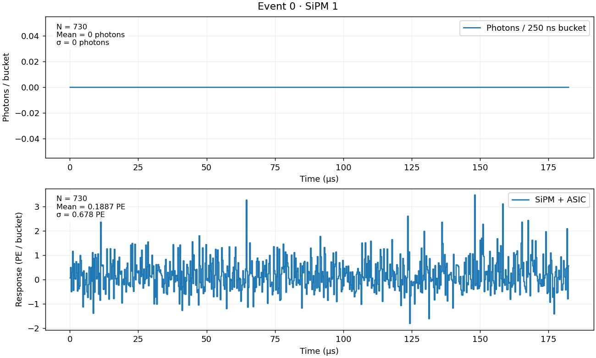
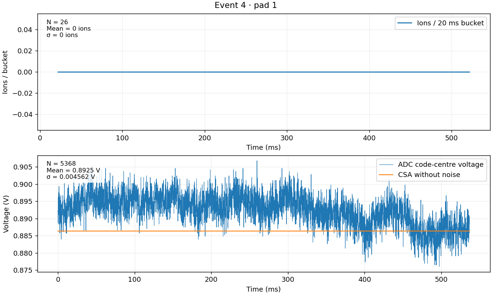
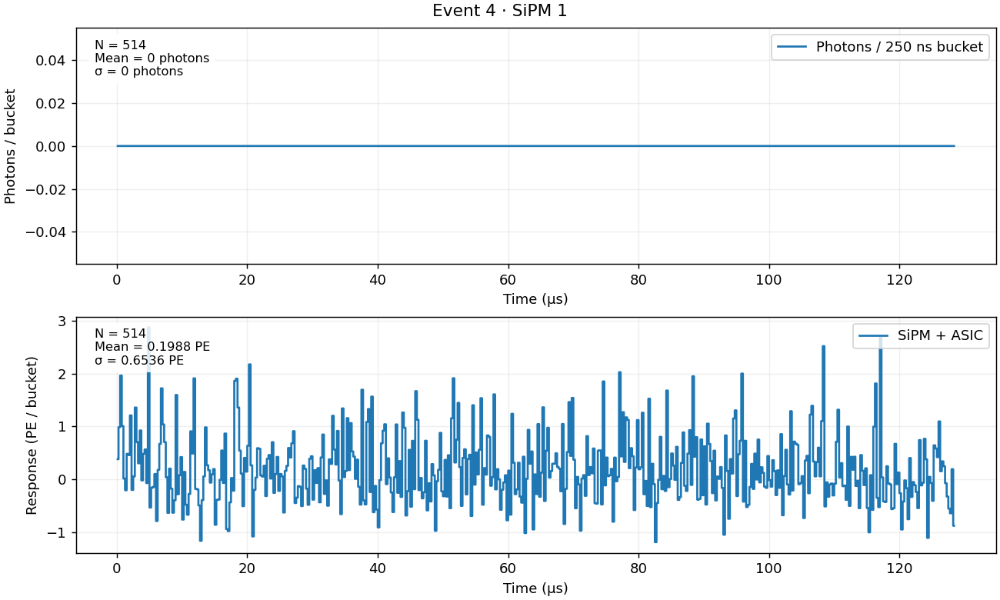
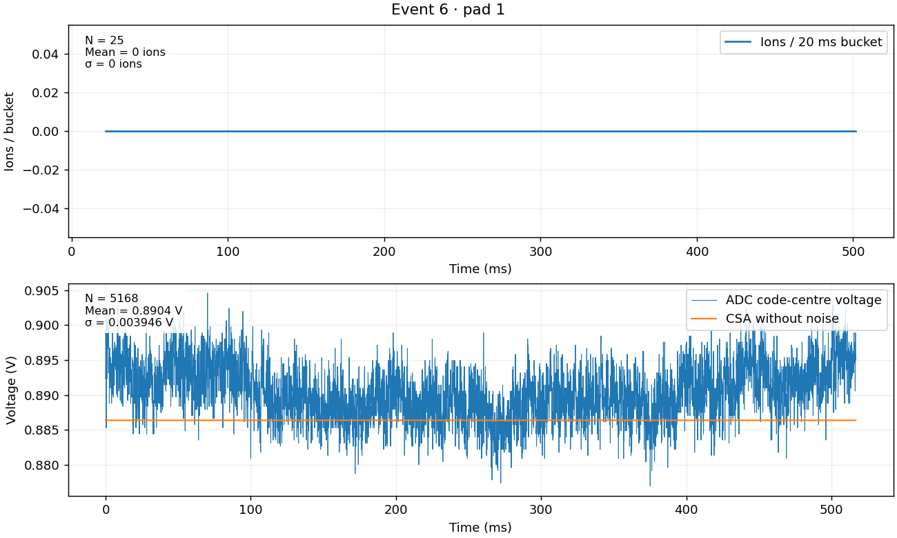
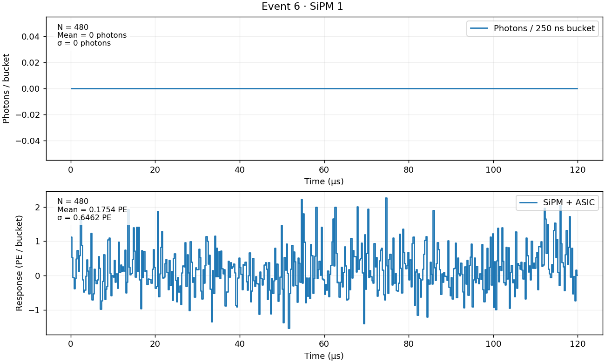
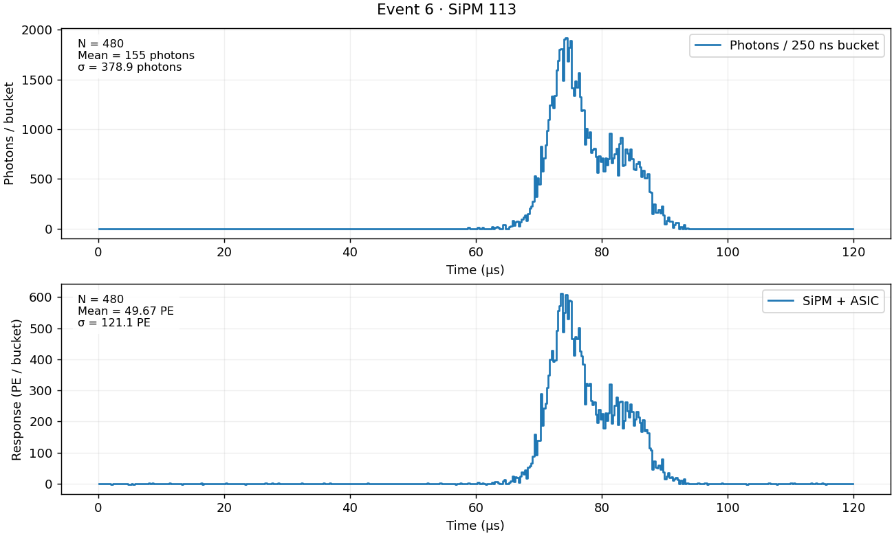
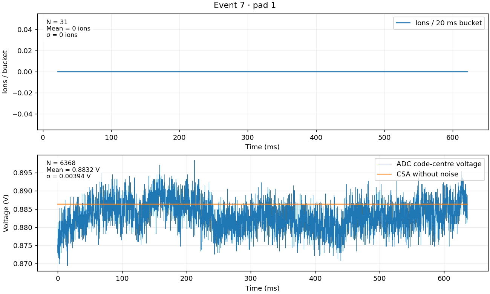
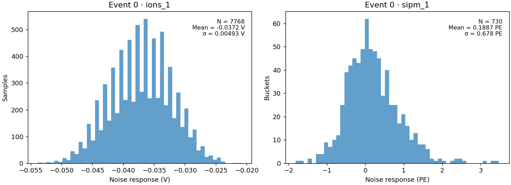
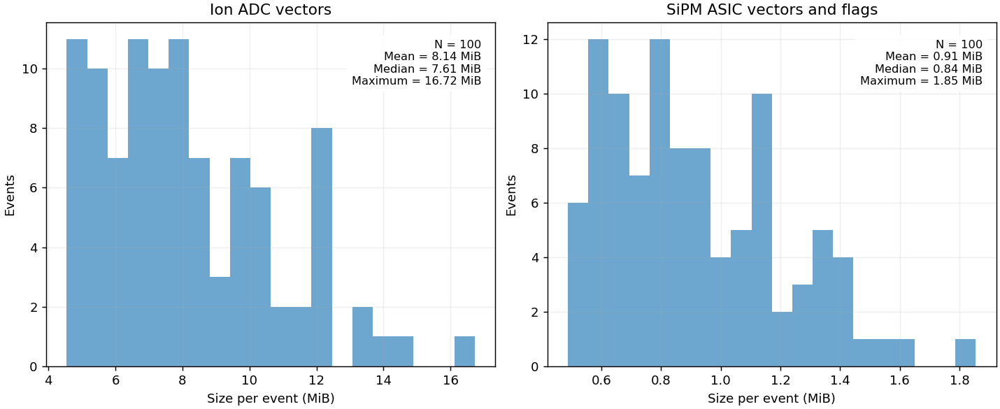

bb0nu · Electronics response
- TopMetal pitch 3 mm; ion buckets 20 ms.
- SiPMs pitch 4 mm; ASIC buckets 250 ns.
- ADC: 12 bits, 0–1.8 V, 100 μs sampling; additional input noise zero.
- Baseline 10 ms before induced current; final sampling 5 ms after collection.
Events and timing
Times cover electronics processing; the first event includes compilation. Every channel in the frame is simulated.
Per-event timing and counts
| Event | Pads | ADC samples/pad | SiPMs | Buckets/SiPM | Complete ion calculation (s) | SiPM + ASIC (s) | Nonlinear pads | ADC out of range | ASIC clipped buckets |
|---|---|---|---|---|---|---|---|---|---|
| 0 | 832 | 7768 | 480 | 730 | 0.617 | 0.274 | 2 | 0 | 0 |
| 3 | 552 | 5168 | 324 | 484 | 0.074 | 0.184 | 2 | 0 | 0 |
| 4 | 720 | 5368 | 414 | 514 | 0.091 | 0.324 | 1 | 0 | 0 |
| 6 | 589 | 5168 | 345 | 480 | 0.072 | 0.192 | 4 | 0 | 0 |
| 7 | 600 | 6368 | 342 | 599 | 0.082 | 0.197 | 1 | 0 | 0 |
| 8 | 532 | 5568 | 308 | 522 | 0.065 | 0.181 | 5 | 0 | 0 |
| 10 | 462 | 5368 | 272 | 496 | 0.063 | 0.163 | 1 | 0 | 0 |
| 12 | 836 | 4768 | 493 | 440 | 0.093 | 0.354 | 3 | 0 | 0 |
| 13 | 1032 | 5168 | 594 | 478 | 0.101 | 0.312 | 2 | 0 | 0 |
| 14 | 1269 | 4968 | 720 | 460 | 0.124 | 0.363 | 0 | 0 | 0 |
| 15 | 525 | 5768 | 304 | 540 | 0.055 | 0.184 | 4 | 0 | 0 |
| 17 | 546 | 6368 | 320 | 598 | 0.063 | 0.281 | 4 | 0 | 0 |
| 19 | 899 | 6168 | 506 | 574 | 0.095 | 0.266 | 1 | 0 | 0 |
| 20 | 572 | 4568 | 323 | 417 | 0.053 | 0.189 | 4 | 0 | 0 |
| 21 | 1440 | 5168 | 792 | 470 | 0.147 | 0.395 | 0 | 0 | 0 |
| 22 | 600 | 5968 | 330 | 566 | 0.064 | 0.277 | 2 | 0 | 0 |
| 23 | 552 | 4968 | 342 | 460 | 0.069 | 0.193 | 3 | 0 | 0 |
| 24 | 897 | 7768 | 522 | 745 | 0.150 | 0.293 | 3 | 0 | 0 |
| 25 | 690 | 4168 | 391 | 385 | 0.070 | 0.218 | 4 | 0 | 0 |
| 26 | 525 | 5968 | 304 | 564 | 0.068 | 0.182 | 2 | 0 | 0 |
| 27 | 546 | 4768 | 320 | 452 | 0.157 | 0.163 | 3 | 0 | 0 |
| 28 | 1122 | 4968 | 625 | 455 | 0.110 | 0.325 | 2 | 0 | 0 |
| 29 | 504 | 7568 | 304 | 711 | 0.071 | 0.179 | 1 | 0 | 0 |
| 31 | 1014 | 6368 | 570 | 601 | 0.098 | 0.309 | 1 | 0 | 0 |
| 32 | 729 | 5568 | 420 | 510 | 0.103 | 0.305 | 2 | 0 | 0 |
| 33 | 1008 | 6968 | 544 | 666 | 0.112 | 0.299 | 0 | 0 | 0 |
| 36 | 696 | 5568 | 374 | 527 | 0.088 | 0.211 | 1 | 0 | 0 |
| 37 | 1088 | 5768 | 624 | 546 | 0.125 | 0.404 | 3 | 0 | 0 |
| 38 | 532 | 7968 | 315 | 769 | 0.080 | 0.185 | 4 | 0 | 0 |
| 39 | 506 | 5168 | 289 | 484 | 0.053 | 0.175 | 4 | 0 | 0 |
| 41 | 850 | 6168 | 520 | 584 | 0.097 | 0.281 | 2 | 0 | 0 |
| 43 | 648 | 8368 | 399 | 810 | 0.707 | 0.314 | 2 | 0 | 0 |
| 46 | 621 | 4568 | 340 | 424 | 0.066 | 0.194 | 2 | 0 | 0 |
| 48 | 600 | 6968 | 361 | 650 | 0.084 | 0.201 | 0 | 0 | 0 |
| 49 | 648 | 5168 | 399 | 492 | 0.077 | 0.213 | 5 | 0 | 0 |
| 50 | 858 | 5368 | 522 | 507 | 0.087 | 0.281 | 3 | 0 | 0 |
| 51 | 609 | 4368 | 352 | 416 | 0.155 | 0.199 | 3 | 0 | 0 |
| 52 | 484 | 5368 | 289 | 497 | 0.062 | 0.164 | 5 | 0 | 0 |
| 53 | 825 | 6568 | 475 | 617 | 0.105 | 0.259 | 1 | 0 | 0 |
| 55 | 930 | 5568 | 529 | 525 | 0.088 | 0.290 | 5 | 0 | 0 |
| 56 | 812 | 5568 | 441 | 518 | 0.080 | 0.346 | 3 | 0 | 0 |
| 58 | 868 | 5168 | 528 | 477 | 0.107 | 0.256 | 0 | 0 | 0 |
| 59 | 816 | 7368 | 494 | 702 | 0.089 | 0.271 | 5 | 0 | 0 |
| 60 | 616 | 4568 | 357 | 404 | 0.074 | 0.196 | 0 | 0 | 0 |
| 61 | 825 | 4768 | 475 | 431 | 0.080 | 0.255 | 3 | 0 | 0 |
| 62 | 552 | 6368 | 324 | 607 | 0.158 | 0.189 | 3 | 0 | 0 |
| 63 | 875 | 7368 | 513 | 705 | 0.120 | 0.264 | 0 | 0 | 0 |
| 65 | 625 | 4768 | 361 | 428 | 0.075 | 0.193 | 0 | 0 | 0 |
| 66 | 782 | 5368 | 416 | 497 | 0.080 | 0.227 | 1 | 0 | 0 |
| 67 | 930 | 4968 | 552 | 477 | 0.082 | 0.378 | 5 | 0 | 0 |
| 68 | 690 | 7368 | 414 | 704 | 0.074 | 0.236 | 1 | 0 | 0 |
| 69 | 952 | 5168 | 546 | 482 | 0.108 | 0.257 | 2 | 0 | 0 |
| 70 | 782 | 5568 | 450 | 528 | 0.086 | 0.249 | 2 | 0 | 0 |
| 72 | 713 | 7568 | 414 | 729 | 0.193 | 0.231 | 0 | 0 | 0 |
| 73 | 644 | 4968 | 378 | 463 | 0.078 | 0.199 | 1 | 0 | 0 |
| 74 | 744 | 4768 | 414 | 454 | 0.067 | 0.232 | 3 | 0 | 0 |
| 75 | 620 | 5168 | 368 | 486 | 0.079 | 0.203 | 1 | 0 | 0 |
| 76 | 899 | 5168 | 506 | 486 | 0.084 | 0.274 | 4 | 0 | 0 |
| 77 | 1025 | 7368 | 589 | 701 | 0.138 | 0.390 | 2 | 0 | 0 |
| 78 | 506 | 4968 | 289 | 450 | 0.067 | 0.143 | 4 | 0 | 6 |
| 79 | 546 | 5768 | 320 | 533 | 0.064 | 0.185 | 2 | 0 | 0 |
| 81 | 840 | 4768 | 506 | 454 | 0.097 | 0.242 | 3 | 0 | 0 |
| 82 | 1014 | 6368 | 600 | 601 | 0.122 | 0.306 | 1 | 0 | 0 |
| 83 | 936 | 5568 | 540 | 524 | 0.187 | 0.285 | 1 | 0 | 0 |
| 84 | 754 | 4368 | 440 | 400 | 0.093 | 0.224 | 2 | 0 | 0 |
| 86 | 420 | 6968 | 240 | 663 | 0.057 | 0.154 | 4 | 0 | 0 |
| 88 | 696 | 7168 | 396 | 688 | 0.091 | 0.214 | 3 | 0 | 0 |
| 89 | 520 | 7168 | 304 | 674 | 0.072 | 0.177 | 2 | 0 | 0 |
| 91 | 650 | 5768 | 361 | 547 | 0.087 | 0.280 | 2 | 0 | 0 |
| 92 | 624 | 6368 | 342 | 599 | 0.090 | 0.184 | 1 | 0 | 0 |
| 94 | 650 | 6368 | 380 | 595 | 0.069 | 0.219 | 3 | 0 | 0 |
| 97 | 870 | 7168 | 506 | 666 | 0.108 | 0.260 | 0 | 0 | 0 |
| 98 | 598 | 4768 | 340 | 450 | 0.073 | 0.166 | 0 | 0 | 0 |
| 99 | 792 | 4568 | 475 | 431 | 0.168 | 0.257 | 3 | 0 | 0 |
| 100 | 1080 | 5768 | 621 | 542 | 0.106 | 0.326 | 4 | 0 | 0 |
| 101 | 775 | 5368 | 480 | 505 | 0.095 | 0.242 | 1 | 0 | 0 |
| 102 | 630 | 6768 | 368 | 644 | 0.076 | 0.215 | 2 | 0 | 0 |
| 104 | 748 | 4568 | 442 | 414 | 0.175 | 0.235 | 3 | 0 | 0 |
| 108 | 550 | 4768 | 323 | 439 | 0.062 | 0.190 | 2 | 0 | 0 |
| 109 | 462 | 5368 | 255 | 486 | 0.046 | 0.158 | 5 | 0 | 0 |
| 111 | 899 | 6368 | 483 | 613 | 0.121 | 0.255 | 0 | 0 | 0 |
| 112 | 1044 | 5768 | 594 | 532 | 0.127 | 0.386 | 1 | 0 | 0 |
| 114 | 832 | 6168 | 500 | 581 | 0.102 | 0.262 | 2 | 0 | 0 |
| 115 | 594 | 4968 | 357 | 453 | 0.077 | 0.186 | 2 | 0 | 0 |
| 116 | 957 | 4168 | 550 | 387 | 0.103 | 0.268 | 1 | 0 | 0 |
| 118 | 609 | 5568 | 336 | 513 | 0.068 | 0.196 | 5 | 0 | 0 |
| 119 | 850 | 5368 | 500 | 510 | 0.089 | 0.358 | 2 | 0 | 0 |
| 122 | 616 | 5568 | 374 | 539 | 0.070 | 0.220 | 3 | 0 | 0 |
| 123 | 572 | 4168 | 320 | 391 | 0.060 | 0.187 | 4 | 0 | 0 |
| 124 | 810 | 6968 | 440 | 673 | 0.097 | 0.252 | 3 | 0 | 0 |
| 125 | 690 | 4968 | 391 | 472 | 0.083 | 0.219 | 1 | 0 | 0 |
| 127 | 810 | 4968 | 462 | 461 | 0.107 | 0.311 | 0 | 0 | 0 |
| 128 | 864 | 5168 | 525 | 480 | 0.083 | 0.279 | 5 | 0 | 0 |
| 130 | 648 | 5168 | 399 | 482 | 0.070 | 0.221 | 2 | 0 | 0 |
| 132 | 972 | 4568 | 567 | 417 | 0.109 | 0.288 | 1 | 0 | 0 |
| 134 | 660 | 5768 | 391 | 556 | 0.076 | 0.301 | 3 | 0 | 0 |
| 135 | 792 | 4768 | 456 | 442 | 0.074 | 0.253 | 3 | 0 | 0 |
| 136 | 700 | 7368 | 418 | 710 | 0.102 | 0.224 | 2 | 0 | 0 |
| 137 | 480 | 5368 | 304 | 512 | 0.054 | 0.187 | 3 | 0 | 0 |
| 138 | 1023 | 8568 | 575 | 820 | 0.343 | 0.284 | 1 | 0 | 6 |
Mean time after the first event: complete ion calculation 0.101 s/event; SiPM + ASIC 0.246 s/event.
CSA calculation time
- One-time ion setup: 0.729 s; SiPM setup: 0.009 s.
- First ion event, including compilation and initial noise preparation: 0.617 s.
- Same 100 events, excluding the first: 0.794 → 0.101 s/event (7.86× faster).
- Ion time includes event preparation, current calculation, current-limit checks, CSA response, correlated noise and ADC conversion. The earlier preparation timer also included loading the SiPM cards.
- Estimated ion calculation for 8,000 events: 13.5 min, plus one-time setup and compilation. Detector transport, SiPM processing and plots are separate.
- Mean allocations: 41.92 MiB/event. Maximum retained CSA preparation and working arrays: 9.96 MiB.
- Maximum noiseless-voltage change in saved examples: 0 V. 0 ADC samples changed, by at most 0 count.
- All 100 events retain the same linear/nonlinear choices and current-limit flags. SiPM examples are unchanged.
100 events; 225 nonlinear pad vectors; 0 ADC samples outside range; 12 clipped ASIC buckets.
Peak-current checks
5 pads in 5 events exceed the calibration sample maximum. Largest ratio: 1.519. Events use the existing linear/nonlinear models. No SPICE runs are launched.
| Event | Pad indices | Peak current (A) | Ratio to calibration maximum |
|---|---|---|---|
| 20 | 5, 4 | 1.1816e-13 | 1.519 |
| 67 | 11, -17 | 8.83e-14 | 1.135 |
| 74 | -2, 1 | 8.9675e-14 | 1.153 |
| 109 | 1, -4 | 9.5674e-14 | 1.230 |
| 135 | 10, -2 | 1.0169e-13 | 1.307 |
Validation
| Quantity | Value |
|---|---|
| Maximum linear voltage residual against SPICE | 2.12322e-07 V |
| Maximum nonlinear voltage residual against SPICE | 4.16952e-05 V |
| Nonlinear SPICE cases | 24 |
| Maximum short-lag covariance error / variance | 3.49955e-10 |
| CSA voltage-noise RMS before filtering | 0.0311905 V |
Maximum linear-voltage difference from the exact recurrence: 5.83e-13 V with 25 μs convolution steps; 3.59e-14 V with 6.25 μs steps.
The raw voltage noise includes slowly varying components. Its RMS is not the reconstructed ion uncertainty.
Example pad and SiPM vectors
For each event, show the channel with the largest input and a channel with zero input, when present. Ion times are relative to the first ADC sample; SiPM times are relative to the first photon bucket. The vectors retain their event-t0 offsets in memory.
Event 0




Event 3


Event 4




Event 6




Event 7



Noise examples
ADC voltage minus simulated noiseless voltage includes CSA noise and quantisation. SiPM examples have zero input photons and include dark activity and ASIC noise.

Output vector sizes

Full event vectors remain in memory. Saved controls contain summaries and selected channel examples.